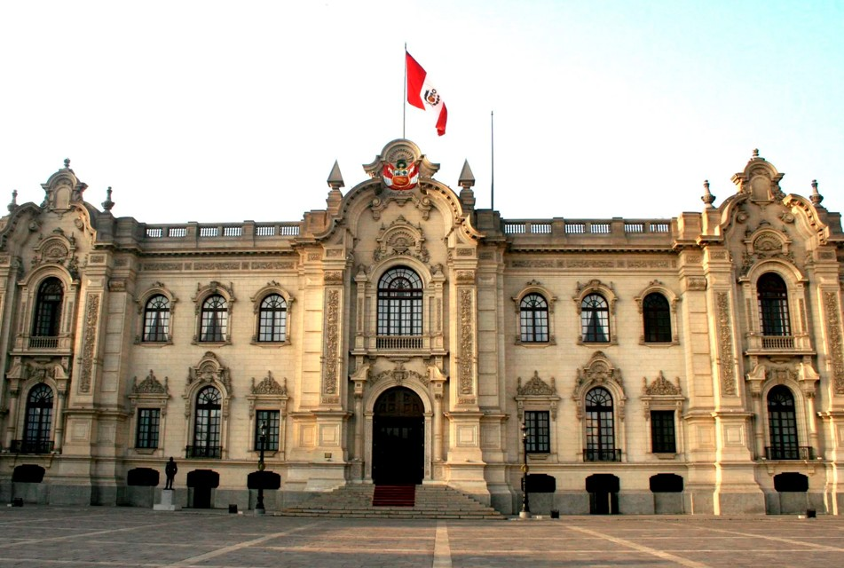

Poder Ejecutivo aprueba Política General de Gobierno 2026-2031: estos son los cinco ejes en que se basa
El Ejecutivo aprobó la Política General de Gobierno de 2026-2031 basada en cinco ejes. El premier Galarreta indicó que constituye una hoja de ruta para acortar brechas sociales y garantizar derechos fundamentales de la población.
Leer más
ERM 2026: JNE inaplica ley del Congreso que reducía valla electoral para que los partidos políticos no pierdan su inscripción
El Pleno del JNE decidió, por mayoría, inaplicar la Ley N.º 32657, la cual reducía de 50 % a 30 % la valla que evitaba la cancelación de las inscripciones de los partidos políticos, en el marco de las elecciones regionales y municipales.
Leer más
Precio del dólar HOY en Perú: ¿cuál es la cotización del tipo de cambio para el lunes 7 de septiembre?
¿Subió o bajó? Conoce cuál es el precio del dólar, así como la cotización del tipo de cambio para la compra y venta en la apertura de la jornada de este lunes 7 de septiembre.
Leer más